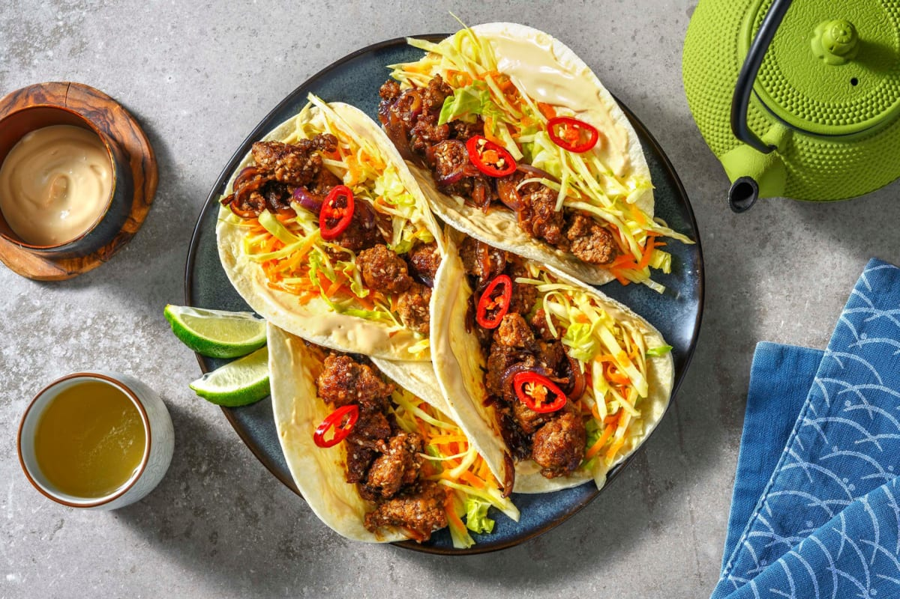

Fredagstaco

Description
Denne taco oppskriften er studert og perfeksjonert etter flere år med fredagstaco
Ingredients
- Alle typer grønnsaker, skjær opp til en familie
- 600g kjøttdeig storfe eller kylling
- Norwegia Ost
- Tacosaus
Steps
- Kutt opp alle grønnsaker og fordel i boller
- Finn frem alle sauser og legg pent frem
- Varm opp lomper, stek kjøttdeig og bland inn tacokrydder osv. A cup of meat sauce, a layer of noodles, more sauce, followed by a layer of cheese. Repeat until you have three layers and have used up all the ingredients.